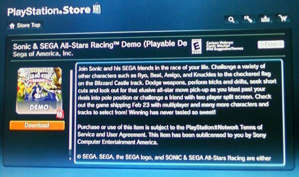

🏠 首頁
📁 未知版塊
SSAR PS3試玩版正式發布
👤 aoifh
🕐 2010-02-20 07:43:07
繼上次的X360以及NDS 試玩版釋出後，現在PSN正式發布「Sonic & SEGA All-Stars Racing」試玩版。立即透過網路連到PSN即可下載，在試玩版中可操控 Sonic以及Eggman。PS3的玩家準備好了嗎？繫好安全帶準備衝出起跑線囉！
[align=center]

附件: ssar.jpg
[/align]試玩版影片 - Sonic
試玩版影片 - Eggman
👤 darkspinesonic4
🕐 2010-02-20 08:06:06
這兩個影片中這位玩家用了一招玩跑跑的高手常玩的----
直線跑道上的甩尾!!!!!
利用這招加速......XD
整個影片就是讓人覺得很高手啊!!!!!